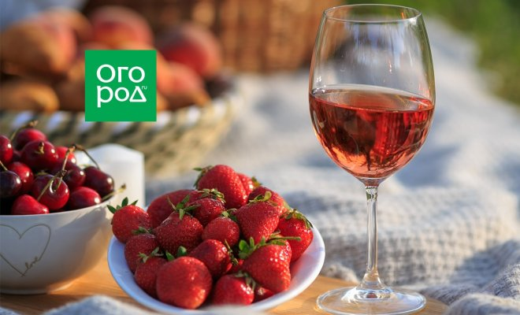
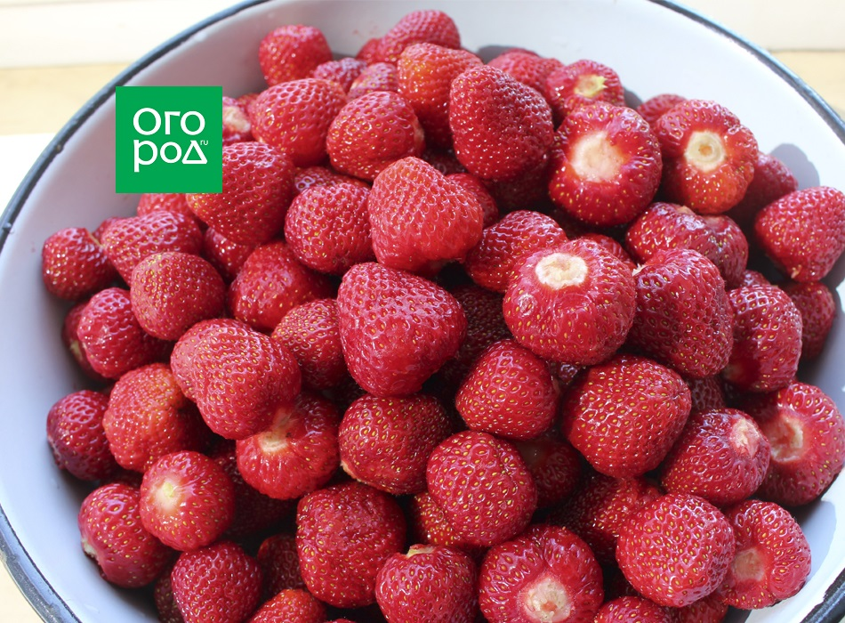
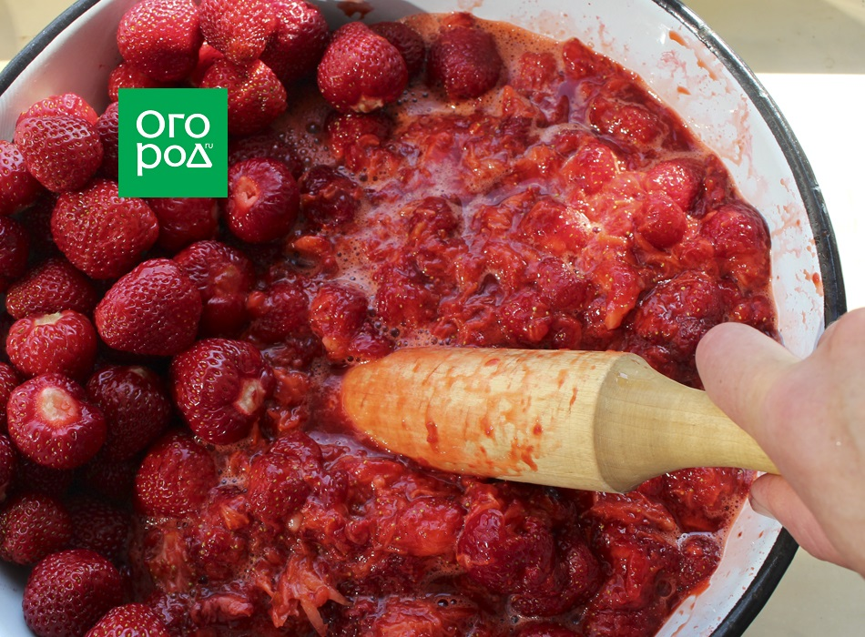
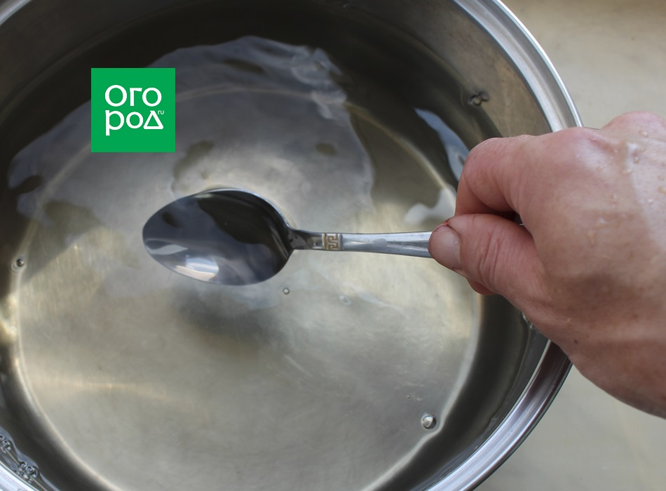
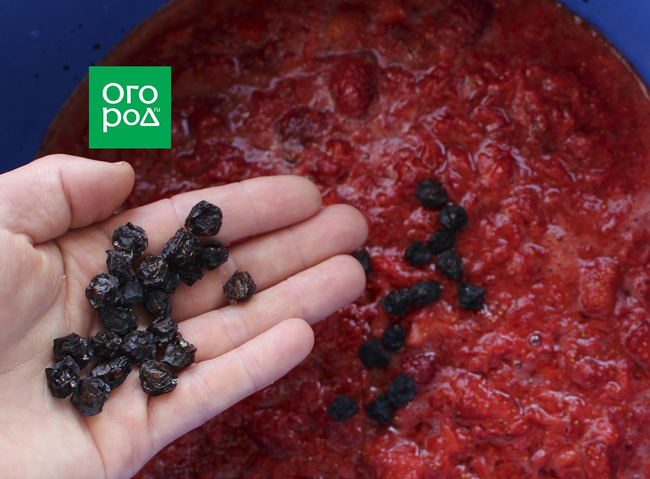
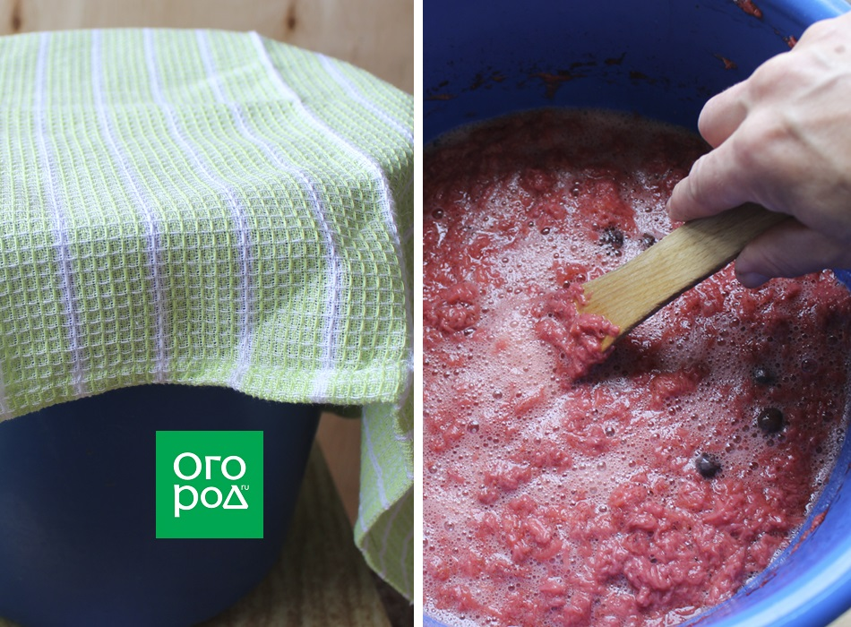
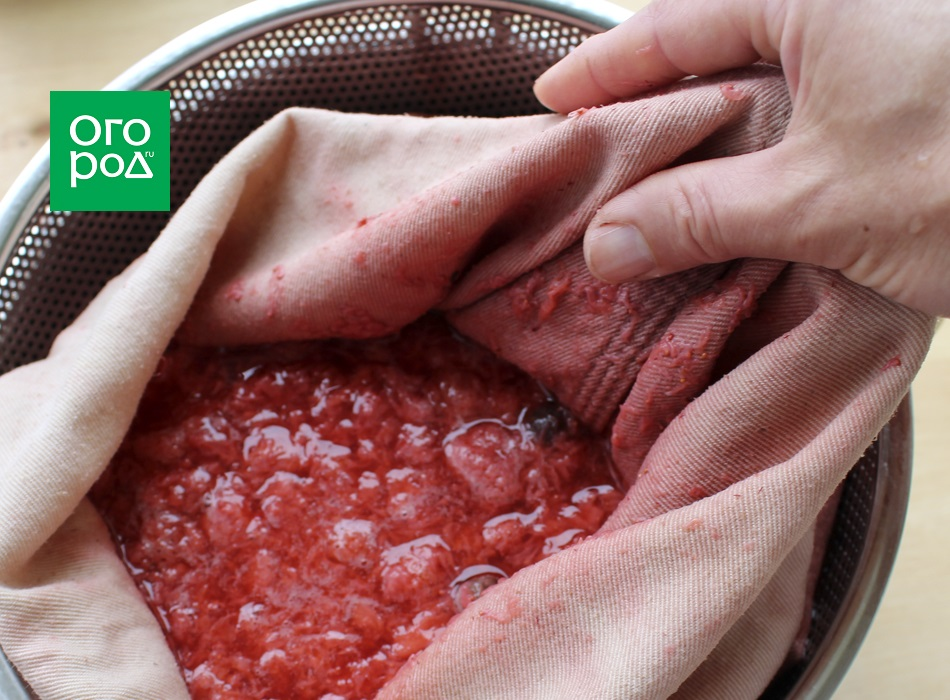
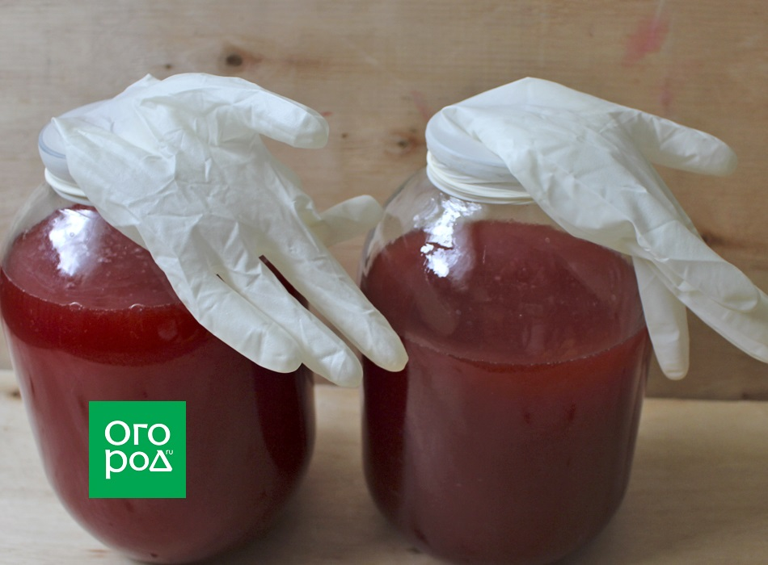
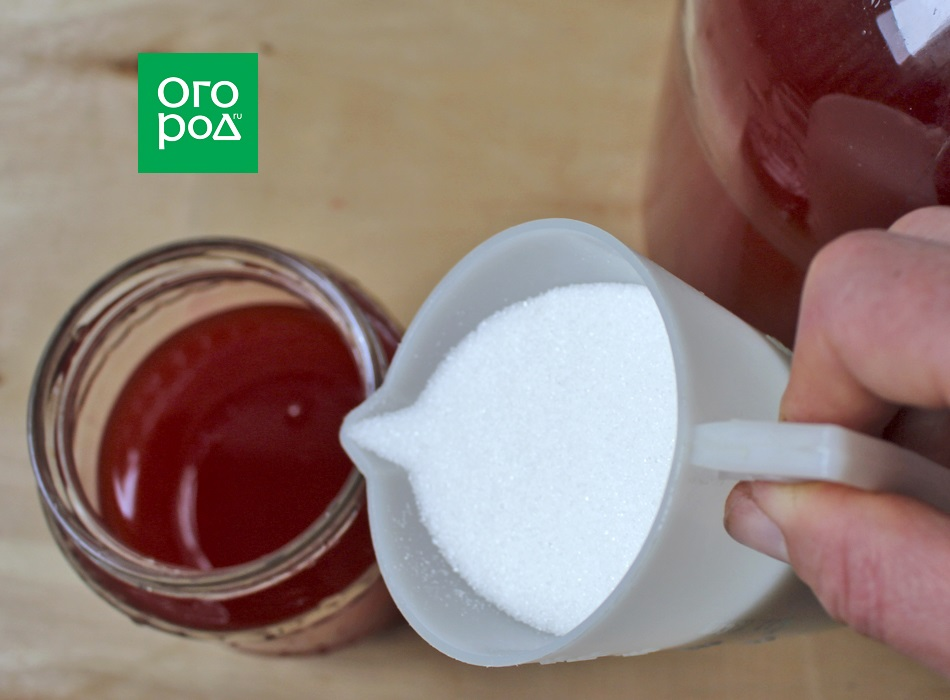

Екатерина Горбаченок / ogorod.ru
Клубника, или садовая земляника, – одна из самых популярных ягодных культур в мире. И неспроста: она не только невероятно вкусна, но и полезна для здоровья, поскольку содержит большое количество витаминов, минералов, клетчатки, а также пектин, флавоноиды и органические кислоты.
Из клубники можно приготовить не только варенье и компот, но и замечательное вино – вкусное и ароматное. Кстати, в отличие от тех заготовок, где ягоды подвергаются термической обработке, в клубничном вине сохраняется большое количество антиоксидантов и других полезных веществ.
Вам понадобятся: ягоды клубники – 3 кг, вода – 3 л, сахар – 2 кг, изюм – 100 г.
Шаг 1. Подготовьте ягоды

Соберите спелые ягоды клубники в чистую емкость и удалите чашелистики. Если ягода чистая и не лежит на земле, то ее можно не мыть, чтобы сохранить на поверхности дикие дрожжи, необходимые для брожения. В этом случае изюм можно не добавлять. Если ягоды грязные, то их необходимо помыть.
Для приготовления вина желательно собирать самые спелые и сочные ягоды, которые можно будет легко перемять.
Шаг 2. Измельчите ягоды

Положите ягоды в широкую емкость и тщательно перемните их руками или картофелемялкой. Все ягодки должны быть раздавлены. Клубнику можно разминать прямо в емкости для брожения. Это может быть эмалированная кастрюля или ведро из пищевого пластика.
Шаг 3. Добавьте сахарный сироп

Добавьте в 3 л теплой воды 1 кг сахара. Когда вода остынет и сахар полностью растворится, влейте сироп в емкость для брожения, соединив с перемятыми ягодами. Посуда должна быть наполнена не более чем на 70%, поскольку в процессе брожения будут выделяться пена и углекислый газ.
Шаг 4. Добавьте изюм

Если вы помыли клубнику, то добавьте в ягодную массу горсть немытого изюма, чтобы запустить процесс брожения.
Шаг 5. Следите за брожением

Прикройте емкость полотенцем и поставьте на 6-7 дней в темное и теплое место с температурой 19-25°C. Несколько раз в день перемешивайте сусло деревянной лопаткой, ложкой или рукой. Признаки брожения (пена, кислый запах) появляются обычно на второй день. Это означает, что все идет хорошо.
Шаг 6. Процедите сусло

Через 5-6 дней процедите сусло. Для этого можно использовать тканевый мешок, марлю или мелкое сито. Ягодный жмых отожмите и выбросьте: он больше не нужен.
Шаг 7. Установите затвор

Перелейте будущее вино в стерильную банку. В емкости должно остаться как минимум 25% свободного места для новых порций сахара и для пены. Добавьте 500 г сахара и установите затвор. Это может быть гидрозатвор или перчатка с проколотым пальцем.
Шаг 8. Постепенно добавляйте сахар

Спустя 5 дней после установки затвора слейте небольшое количество сусла в отдельную посуду и добавьте еще 250 г сахара. Тщательно перемешайте и влейте получившийся сироп в будущее вино. Закройте емкость, установив затвор, а через 5 дней добавьте последнюю порцию сахара (250 г) и поставьте в темное и теплое место до окончания брожения. Этот процесс длится 30-50 дней, в зависимости от активности дрожжей. Когда брожение закончится, перчатка сдуется, а гидрозатвор перестанет пускать пузыри, слейте через трубочку молодое вино с осадка. Если сахара недостаточно, добавьте небольшую порцию по вкусу и снова установите затвор как минимум на 10 дней.
После окончания брожения слейте вино с осадка, плотно закройте емкость и поставьте в прохладное место (например, в погреб) для созревания. Выдерживать домашнее вино из клубники следует около трех месяцев. Напиток будет полностью готов, когда осадок больше не будет появляться. После этого вино можно разливать по бутылкам. Хранить клубничное вино желательно при температуре 10-15°С.
При изготовлении вина клубнику можно смешивать с красной или черной смородиной. Получится не менее вкусно. Попробуйте, и вам обязательно понравится!